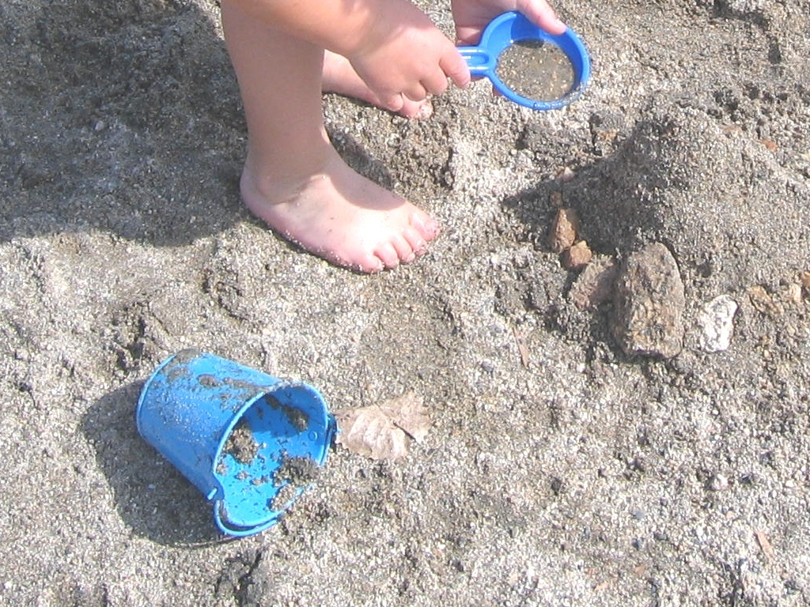
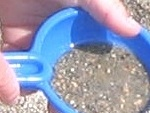
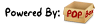

V2.7a - Sometimes More Is Better.
What is PopBox?
PopBox is an image magnification javascript solution for
dynamically moving and resizing images on your web page. For a
good introduction and the latest version please see the PopBox
product page.
The documentation section links are located in the left
column.
- Version 2.7a - released July 3, 2009
- Fixed a bug in the new IE8 that kept images from
popping more than once.
- Fixed a bug in FireFox where strange image pops would
occur if you clicked the popbar instead of the actual
image to pop it.
- Fixed an image positioning bug when using absolute
positioning.
- Version 2.6b - released September 24, 2008
- Modified the PopInPlace method to always display the
popped image at its full size subject to window size. It
will still pop over the original image, but if it hits the
edge of the window it will move so it can fit instead of
stopping the animation.
- Version 2.6 - released September 12, 2008
- Added the PopInPlace
method to more easily pop the image in place instead of to
the center of the screen.
- Added the popBoxExpandCaptionsBelow global variable
that will allow you to display the captions below the
image instead of over the image.
- Added the popBoxExpandCaptions global variable that
will allow you to display the captions already expanded
when the image is popped.
- Added the RevertAll
method that will cause all popped images to revert to
their original size.
- Fixed a few functionality issues that occurred when
the page used the <base /> element in the
header.
- Fixed an image size bug where IE would cache the
original size of the image. This mostly affected
development but it was still a pain.
- Fixed a positioning bug in FF & Safari when a
<div> parent element used the overflow style.
- Fixed a FF bug where the image would pop twice under
very rare conditions.
- Version 2.5 - released December 18, 2007
- Added the capability to pop images in a landscape
format where the image is automatically scaled to the
height of the browser but will extend beyond the width if
necessary to support wide images (ditto for tall
images).
For most
customers this is 100% backward compatible, but if you are
using the PopEx
method instead of the Pop method you should take a look at
the parameters as they now have extra functionality. See
the function definition for details.
- Fixed a bug that occurred when the pnSrcNL property
was set to a relative path url. If you use the pbSrcNL instead
of pbSrc then you need to get this upgrade.
- Added a work-around for a browser bug where the image
would sometimes not revert on roll-overs when the mouse
left the image. This fix requires a few more resources but
is only enabled for the page when you use the onmouseover
feature. There is a global variable,
popBoxMouseMoveRevert, that you can set to false to use the old method
instead if you prefer.
- Fixed a bug where the size of the image is incorrectly
rendered during a revert if the command to revert the
image is initiated prior to the image popping completely.
This most often showed up on mouseover effects.
- Set the minimum value for the top left corner of the
popped image to 0,0 if the image is dynamically positioned
(you pass in null for
the left and top). Most browsers tested had difficulty
scrolling to the left and this will solve that
problem.
- The "more" and "less" textual links in the caption are
now contained in global variables to support other
languages. Now you can set popBoxCaptionMoreText and
popBoxCaptionLessText to "mehr" and "kleiner" or to
whatever you desire - just keep it short or the length
calculations will be off.
- Version 2.4 - released October 27, 2007
- Added events that fire before the image is
Popped or Reverted. Now if you have UI elements on the
page (such as <select> drop-downs) that always
render on top you can hide them prior to the image Popping
and then make them visible again when the image
Reverts.
- Fixed a sizing bug that occurred when multiple
identical thumbnail images (with the same src value) each
Popped to different large images.
- Version 2.3 - released September 20, 2007
- Fixed a bug where the PopBar would not display if the
images did not have unique ids.
- Created a new global function called CreateRandomId()
for this purpose.
- Version 2.2 - released July 20, 2007
- Changed the cursor for the PopBar and RevertBar to
match the image cursor.
- Fixed a bug in Mozilla browsers where the image would
not display correctly if clicked prior to the page
completely loading.
- Fixed a bug where the wait image would not display if
the image was clicked prior to completely loading.
- Fixed a bug where the wait image would not disappear
if the image was clicked more than once before completely
loading.
- Version 2.1 - released July 16, 2007
- Added a "pbCaption" attribute that is used to display
a caption for the image. (Defaults to the "title"
attribute if pbCaption doesn't exist.) If it's too large
to fit on one line it automatically renders with an
expanding capability.
NOTE: If you are upgrading
from a previous version be aware that the default values
in 2.1 will render your title attribute as a
caption.
- Added "popBoxCaptionBelow" and "popBoxShowCaption"
global variables to support the caption feature. Also
added a "pbShowCaption" attribute override.
- Added a "pbSrcNL" attribute to the <img> tag that
allows for a different image to be used for the Popped
image that is NOT preloaded.
- Fixed the stylesheet to display custom cursors in
FireFox also.
- Changed the cursor to the arrow image during
resizes.
- Fixed a bug where the PopBar wasn't moved with the
image when the page was resized. See PopBar
Notes for details.
- Fixed a minor bug where the popped image size was 20
pixels smaller than necessary if there was no
RevertBar.
- Version 2.0 - released June 28, 2007
- Added a "pbSrc" attribute to the <img> tag that
allows for a different image to be used for the Popped
image.
- Added a popBoxAutoClose global variable that controls
automatic creation of calls to Revert.
- Added the PopBar transparency, text and image on page
load.
- Added global variables and custom attributes to
support the PopBar.
- Added global variables (popBoxRevertBarAbove &
popBoxPopBarAbove) to control if the RevertBar and PopBar
display above the image or overlay the image.
- Fixed a bug where the "alt" attribute was not being
copied to the Popped image.
- Now auto-generates an Id for the original image if
omitted.
- Version 1.1 - released June 8, 2007
- Added the RevertBar transparency, text and image.
- Added global variables and custom attributes to
support the RevertBar.
- Fixed a bug where the image would not Pop if the start
size was not defined in the style attribute of the image.
This only showed up when Popping an image was coded to
shrink it instead of enlarge it.
- Refactored source code to standardize on a naming
convention.
- Version 1.0 - released May 24, 2007
PopBox requires you to have a basic understanding of HTML
coding and no more. You should be comfortable editing HTML
attributes and should have access to your web site sufficient
to add script files to your installation.
PopBox requires the client to use a browser that supports
CSS positioning, which includes all modern browsers as of this
date. It also requires that the client browser has javascript
enabled.
All samples are shown in the new 2.x format except where
noted. All later versions of PopBox 2.x are backward
compatible, but some behaviors might change. For example,
version 2.1 added the caption feature, which is turned on by
default, so if you didn't want captions you would need to
change the global variable to retain the look of versions
prior to 2.1.
 PopBox's default configuration will
probably be what most people will use as it was designed
specifically to fit the thumbnail expansion scheme that many
have on their web sites. I have used the same image for all
examples on this page to more easily show the feature
differences. You can click on any of the sample images on this
page to view the results.
- Add the script include for the PopBox code. This
typically looks something like this:
<script src="/yoursite/scripts/PopBox.js"
type="text/javascript"></script>
- Make changes to the global variables to support your
installation directory structure (after the PopBox.js script
include):
<script type="text/javascript">
popBoxWaitImage.src
= "/images/spinner40.gif";
popBoxRevertImage
= "/images/magminus.gif";
popBoxPopImage
= "/images/magplus.gif";
</script>
- Create stylesheet classes to define the look and feel of
the images before and after they are Popped (optional):
.PopBoxImageSmall
{
border: none 0px
white;
cursor: url("http://yourpath/magplus.cur"),
pointer;
}
.PopBoxImageLarge
{
border: solid thin
#CCCCFF;
cursor: url("http://yourpath/magminus.cur"),
pointer;
}
- Version 2.0 added a new simple way to define the call to
PopBox that allows you to use separate images for your
thumbnail and your popped image. PopBox 2.x is 100% backward
compatible and still supports the original way also. Version
2.x also allows you to omit the call to Revert because it
will be generated automatically for you.
-
- Get an image for the thumbnail and a second image
for the expanded image. All types supported by your
browser are supported by PopBox.
- Place the image on the page with a standard <img> tag.
You
can omit the id
attribute and one will be generated for you, but good
coding practice is to define your own for each image
(just make sure they are unique).
<img id="imgBlueScoop" alt=""
src="images/BlueScoopSmall.JPG"
/>
- Add the "pbSrc" or the "pbSrcNL" attribute to the
<img> tag for the
Popped image (HTML attributes are not case-sensitive,
but it's standard to write them in lower case). The NL
in pbSrcNL stands for "No Load" and will not load the
image during the page onload event, but instead will
load it when the user clicks the image.
<img id="imgBlueScoop" alt=""
src="images/BlueScoopSmall.JPG"
pbsrc="images/BlueScoop.JPG"
/>
- Add the "pbCaption" attribute if you want a caption
to display at the bottom of the popped image. (If
pbCaption is not defined but you have defined a "title"
then the "title" will be used as a caption. See the variables
section of the documentation below for more
information.)
<img id="imgBlueScoop" alt=""
src="images/BlueScoopSmall.JPG"
pbsrc="images/BlueScoop.JPG"
pbCaption="I don't know
where we got these beach toys, but they make for a nice
contrasting photograph against the darker sand of Folsom
Lake. It's not the greatest beach, but it's a beach, and
that's a very nice change from a cube wall" />
- Optionally specify other attributes.
<img id="imgBlueScoop" alt=""
src="images/BlueScoopSmall.JPG"
pbsrc="images/BlueScoop.JPG"
pbCaption="I don't know
where we got these beach toys, but they make for a nice
contrasting photograph against the darker sand of Folsom
Lake. It's not the greatest beach, but it's a beach, and
that's a very nice change from a cube wall"
class="PopBoxImageSmall"
title="Click to
magnify/shrink" />
- Add the PopBox call to the image events you
want.
PopBox was designed to work in command pairs
where one command Pops the image and a second command
Reverts it back to it's thumbnail state. In version 2.x
if you use onclick
or onmouseover then
the call to Revert will be automatically generated for
you in the onclick
or onmouseout of the
expanded image.
<img id="imgBlueScoop" alt=""
src="images/BlueScoopSmall.JPG"
pbsrc="images/BlueScoop.JPG"
pbCaption="I don't know
where we got these beach toys, but they make for a nice
contrasting photograph against the darker sand of Folsom
Lake. It's not the greatest beach, but it's a beach, and
that's a very nice change from a cube wall"
class="PopBoxImageSmall"
title="Click to
magnify/shrink"
onclick="Pop(this,50,'PopBoxImageLarge');"
/>

-
- Get an image the full size you want when expanded.
All types supported by your browser are supported by
PopBox.
- Place the image on the page with a standard <img> tag.
Be
sure to use a different "id" attribute for each
image.
<img id="imgBlueScoop" alt=""
src="images/BlueScoop.JPG"
/>
- Use a style attribute to set the width and height to
represent the thumbnail or small image.
<img id="imgBlueScoop" alt=""
src="images/BlueScoop.JPG"
style="width: 150px;
height: 100px;" />
- Optionally specify other attributes.
<img id="imgBlueScoop" alt=""
src="images/BlueScoop.JPG"
style="width: 150px;
height: 100px;"
class="PopBoxImageSmall"
title="Click to
magnify/shrink" />
- Add the PopBox calls to the image events you
want.
PopBox was designed to work in command pairs
where one command Pops the image and a second command
Reverts it back to it's thumbnail state. To easily
achieve this I recommend using onclick/ondblclick or onmouseover/onmouseout.
<img id="imgBlueScoop" alt=""
src="images/BlueScoop.JPG"
style="width: 150px;
height: 100px;"
class="PopBoxImageSmall"
title="Click to
magnify/shrink"
onclick="Pop(this,50,'PopBoxImageLarge');"
ondblclick="Revert(this,50,'PopBoxImageSmall');"
/>
| The onmouseover
and onmouseout pair
allow for an image to expand and shrink just by running
your mouse cursor over the image. (Or set the
popBoxAutoClose global to true and you can omit the
call to onmouseout.) |
|
| The onclick and
ondblclick pair
allow for an image to expand and shrink by clicking on
the image. (Or set the popBoxAutoClose global to true and you can omit the
call to ondblclick.) |
|
| While it wouldn't make any sense to combine onclick and onmouseover to Pop the
image, you can use both ondblclick and onmouseout to revert the
image. (If you set the popBoxAutoClose global to true you can omit the call
to ondblclick if you
assign onclick, but
you will still need to call Revert from onmouseout. The opposite
also applies. This is because the function calls work in
pairs.) |
|
PopBox was designed specifically to allow rollover effects
with onmouseover and onmouseout, or to allow Pop and
Revert by clicking on the image. However, since there is only
one onclick event I have
hijacked the ondblclick
event for the Revert as shown in the source code snippet
above.
With version 2.0 came the popBoxAutoClose global variable
that will automatically generate the call to Revert when set
to true, which is its
default value.
- If you assign onclick to Pop the image then
Revert will automatically be called when the user clicks the
image again.
- If you assign onmouseover to Pop the image
then Revert will automatically be called when the user's
mouse leaves the image.
When you define the pbSrc attribute on the image tag
it will use this image as the popped image, so you can truly
define a thumbnail in src
and an expanded image in pbSrc.
A function runs after the page loads that scans all the
images on the page looking for the pbSrc attribute. If this
attribute exists the image will be preloaded and cached. If
the user pops the image before the image loading is complete a
wait image is displayed until the load is complete. The Url
for this wait image is stored in the popBoxWaitImage.src
global variable.
Because the script is run at page load it is placed into
the window.onload event handler. It does play nice with other
scripts that add things to window.onload, so you should place
the script include for PopBox below all other script includes
that place functions on the window.onload event.
Also remember that the <body> tag has an
onload event which is the same event as the window.onload.
DON'T USE IT! It will override all window.onload events.
Instead declare a script block above the PopBox include script
that adds your function to the window.onload event.
If you do NOT want to preload the image you can place the
popped image url in the pbSrcNL attribute and it will
load when the user clicks it.
The PopBar is very similar to the RevertBar that appears
over the image after it is popped, except that the PopBar is
text you can place over your thumbnail prior to popping it.
You should keep it to one short line of text because the
height of the PopBar will only hold a single line.
In order for a PopBar to appear on an image a function is
run after the page loads that scans all the images on the page
looking for the pbShowPopBar attribute. If this
attribute exists, regardless of whether it is set to true or
false, the PopBar functionality is enabled for that image and
the PopBar global variables and image attributes will be
honored.
Because the script is run at page load it is placed into
the window.onload event handler just like the check for pbSrc;
therefore the same rules for the pbSrc window.onload event
also apply to the PopBar.
Another issue to keep in mind has to do with positioning
the PopBar on the image. Because your image is most likely
positioned "inline" and not "absolute" it is subject to move
as the page is resized or reformatted due to other dynamic
elements. This makes placement of the PopBar a little
tricky... I believe I have solved the problem, but in order to
do so I have made the decision NOT to support all values of
the align attribute on the
image.
The align attribute
(which has actually been deprecated in favor of the "float"
Css style) positions the image so that text can flow around
it. Currently the "float" style is fully supported, but only
the "left" and "right" values of the align attribute are supported.
If demand for support of the other values is high then I will
put the effort into resolution, though the different browsers
seem to render them all differently.
I have received a few support emails relating to the
<base> html tag wherein the urls for PopBox images are
not generating correctly. After doing some research
on this tag it is evident to me that there are much better
ways to retrieve the root url of your site than by using this
tag.
If your goal in using the <base> tag is to use
relative urls then just use relative urls without the
<base> tag. If you need the root url then perhaps you
would be better off using a forward slash at the beginning of
your url or setting it server-side in a variable.
If these solutions are not to your liking you can still use
the <base> tag, but it may require additional testing
and judicious use of absolute urls for PopBox images.
PopBox has a very simple API set with only 4 methods, 4
events and a host of configurable variables and attributes to
get the results you want.
PopBox works not by expanding the image, but by actually
expanding a copy of the image. This allows PopBox to
utilize absolute positioning without affecting the page
layout. The original image is still there - it's just hidden
for the duration of the Popping and Reverting. Images that
start out as absolutely or relatively positioned will not be
copied because positioning them would not affect layout.
| Parameter |
Description |
| obj |
The image object or a string representing the id of
the image object. |
| speed |
The speed at which the move and resize takes
place. |
| className |
The name of the CSS class that will be applied to
the image once the move and/or resize is
complete. |
None.
The Pop method is a user friendly method to move and expand
the image. This method will automatically center the image in
the browser window as well as resize it to the full image
dimensions or window size, whichever is smaller. In other
words, if the size of the image is greater than the available
window the image will be scaled to fit.
The speed parameter is measured roughly in pixels per 1/100
of a second. If the speed value is greater than the number of
pixels the image must move as well as greater than the
expanded height and width of the image then the move and
resize is immediate. There is no default, but images on this
page typically use a value of 50.
| Parameter |
Description |
| obj |
The image object or a string representing the id of
the image object. |
| newLeft |
The position of the left side of the image in
pixels. |
| newTop |
The position of the top side of the image in
pixels. |
| newWidth |
The new width of the image in pixels. |
| newHeight |
The new height of the image in pixels. |
| speed |
The speed at which the move and resize takes
place. |
| className |
The name of the CSS class that will be applied to
the image once the move and/or resize is
complete. |
None.
The PopEx method allows for greater control over image
movement and sizing.
The newLeft and newTop parameters are treated by default as
positions relative to the image starting point and can be
either a negative or positive number. If either value is a
numeric string followed by an upper case "A" then it is
treated as an absolute position, relative to its containing
element (typically the browser window). Ex: "200A". If either
value is null the image
will be centered in the browser window.
If the newWidth value is 0 the full width of the image will
be used up to a maximum of the browser window width. If the
newWidth value is null the
full size of the image will be used regardless of the browser
window width. Passing either 0 or null will still scale the image
against the image height. An integer greater than 0 will not
be scaled.
If the newHeight value is 0 the full height of the image
will be used up to a maximum of the browser window height. If
the newHeight value is null the full size of the image
will be used regardless of the browser window height. Passing
either 0 or null will
still scale the image against the image width. An integer
greater than 0 will not be scaled.
Nice landscape effects can thus be easily created by
setting the newWidth parameter to null to allow the full width,
but setting the newHeight parameter to 0 to allow the height
of the browser window.
If the browser cannot detect the full size of the image the
browser window size is used, subject to the image aspect
ratio.
The speed parameter is measured roughly in pixels per 1/100
of a second. If the speed value is greater than the number of
pixels the image must move as well as greater than the
expanded height and width of the image then the move and
resize is immediate. There is no default, but images on this
page typically use a value of 50.
| Description |
Stretch an image. |
| Code |
PopEx(this, -140, 0, 380, 113, 10,
null); |
| Sample |
|
| |
| Description |
Pop an image to the center of the screen at its
default size and position. Also specify a CSS class that
places a border around the image and specifies a mouse
cursor for browsers that support it. |
| Code |
PopEx(this, null, null, 0, 0, 50,
'PopBoxImageLarge'); |
| Sample |
|
| |
| Description |
Pop a landscape image to the center of the screen
and allow it to extend to the right beyond the window,
but constrain it to the height of the window. |
| Code |
PopEx(this,null,null,null,0,50,'PopBoxImageLarge'); |
| Sample |
|
| Parameter |
Description |
| elem |
The image object or a string representing the id of
the image object. |
| startX |
The starting position of the left side of the image
in pixels. |
| startY |
The starting position of the top side of the image
in pixels. |
| endX |
The ending position of the left side of the image in
pixels. |
| endY |
The ending position of the top side of the image in
pixels. |
| startW |
The starting width of the image in pixels. |
| startH |
The starting height of the image in pixels. |
| endW |
The ending width of the image in pixels. |
| endH |
The ending height of the image in pixels. |
| speedM |
The speed at which the move takes place. |
| speedS |
The speed at which the resize takes place. |
| className |
The name of the CSS class that will be applied to
the image once the move and/or resize is complete. |
| fnDone |
A function to call when the move/resize is complete.
(Do not place this in quotes. It is a
pointer.) |
None.
The PopBox method allows for the greatest amount of control
over image movement and sizing and should only be used if you
really understand CSS positioning. It is highly recommended
that you use the Pop or PopEx functions instead.
The startX, startY, endX and endY parameters are treated as
absolute positions relative to the image's containing element
(typically the browser window).
The speed parameters are measured roughly in pixels per
1/100 of a second.
| Description |
Pop an image with move slightly faster than
resize. |
| Code |
var startPos =
GetElementPosition(elem);
PopBox(elem, startPos.x,
startPos.y, startPos.x - 400, startPos.y - 200, 150,
113, 600, 450, 12, 5, 'PopBoxImageLarge', null); |
| Sample |
|
| Parameter |
Description |
| obj |
The image object or a string representing the id of
the image object. |
| speed |
The speed at which the move and resize takes
place. |
| className |
The name of the CSS class that will be applied to
the image once the move and/or resize is
complete. |
None.
The PopInPlace method is a user friendly method to move and
expand the image. This method will automatically resize the
image over the original image to the full image dimensions or
window size, whichever is smaller. If one or two edges of the
window would keep the image from expanding it will be moved
off the original image center to allow it to expand until it
is full size or hits another window edge.
The speed parameter is measured roughly in pixels per 1/100
of a second. If the speed value is greater than the number of
pixels the image must move as well as greater than the
expanded height and width of the image then the move and
resize is immediate. There is no default, but images on this
page typically use a value of 50.
| Parameter |
Description |
| obj |
The image object or a string representing the id of
the image object. |
| speed |
The speed at which the move and resize takes
place. |
| className |
The name of the CSS class that will be applied to
the image once the move and/or resize is
complete. |
None.
The Revert method is the companion opposite of the Pop or
PopEx method. Like the Pop and PopEx methods it uses the
PopBox method, but instead reverts the popped image back to
it's original state.
The speed parameter is measured roughly in pixels per 1/100
of a second. If the speed value is greater than the number of
pixels the image must move as well as greater than the
expanded height and width of the image then the move and
resize is immediate. There is no default, but images on this
page typically use a value of 50.
| Parameter |
Description |
| speed |
The speed at which the move and resize takes
place. |
| className |
The name of the CSS class that will be applied to
the image once the move and/or resize is
complete. |
None.
The RevertAll method essentially calls the Revert method
for all Popped images.
The speed parameter is measured roughly in pixels per 1/100
of a second. If the speed value is greater than the number of
pixels the image must move as well as greater than the
expanded height and width of the image then the move and
resize is immediate. There is no default, but images on this
page typically use a value of 50.
| Parameter |
Description |
| obj |
The image object or a string representing the id of
the original image object. |
None.
This function (if it exists) is automatically called from
within Pop/PopEx before the move and/or resize begins. To take
advantage of this function you only need to implement it in
your code.
| Parameter |
Description |
| obj |
The image object or a string representing the id of
the copy of the image object. |
None.
This function (if it exists) is automatically called from
within Pop/PopEx once the move and/or resize is complete. To
take advantage of this function you only need to implement it
in your code.
If you wish to do processing based on the specific image
that has been Popped you must remember that PopBox is actually
popping a copy of the original image with a different id
attribute than the original. The copy id is generated using
the following formula:
newId = "popcopy" + originalId;
| Parameter |
Description |
| obj |
The image object or a string representing the id of
the copy of the image object. |
None.
This function (if it exists) is automatically called from
within Revert before the move and/or resize is complete. To
take advantage of this function you only need to implement it
in your code.
If you wish to do processing based on the specific image
that has been Popped you must remember that PopBox is actually
popping a copy of the original image with a different id
attribute than the original. The copy id is generated using
the following formula:
newId = "popcopy" + originalId;
| Parameter |
Description |
| obj |
The image object or a string representing the id of
the original image object. |
None.
This function (if it exists) is automatically called from
within Revert once the move and/or resize is complete. To take
advantage of this function you only need to implement it in
your code.
PopBox uses a number of global variables for configuration
that you can modify to change the way PopBox looks and
behaves.
| Global Variable |
Data Type |
Description |
| popBoxAutoClose |
boolean |
If set to true
then calls to Revert will be generated automatically
when you call Pop/PopEx/PopBox. This allows you to avoid
having to write the calls to Revert for all images since
they are typically very similar.
If onmouseover contains a
function then Revert is placed in the onmouseout event of the
Popped image. If onclick contains a
function then Revert is placed in the onclick of the Popped
image, but only if the onmouseover does not
contain a function. The default value is true. |
| popBoxCaptionBelow |
boolean |
When set to true
the caption will display below the image instead of
overlaying transparently on top of it. The default value
is false. |
| popBoxCaptionLessText |
string |
This variable holds the text that displays in the
hyperlink at the end of the caption when the caption
text is too long to fit on a single line and the full
caption is currently being displayed. The default value
is "less" but can now be altered easily to support other
languages. |
| popBoxCaptionMoreText |
string |
This variable holds the text that displays in the
hyperlink at the end of the caption when the caption
text is too long to fit on a single line and only the
first line is currently being displayed. The default
value is "more" but can now be altered easily to support
other languages. |
| popBoxExpandCaptions |
boolean |
When set to true all captions will expand
automatically upon image pop. The default value is false. |
| popBoxExpandCaptionsBelow |
boolean |
When set to true all captions will expand below the
image instead of upward on top of the image. The default
value is false. |
| popBoxMouseMoveRevert |
boolean |
When set to true any image that is popped using the
onmouseover event
will use a document level onmousemove event to
detect when the mouse is no longer on the image to call
the revert. When set to false the onmouseout event on the
image is used instead.
The document level event
is far more accurate but it takes up extra resources
when the page uses onmouseover events. (No
extra resources are used if the page does not.) The
onmouseout event is
sometimes missed by the browser. The default value is
true. |
| popBoxPopBarAbove |
boolean |
When set to true
the PopBar will display above the image instead of
overlaying transparently on top of it. The default value
is false.
The
pbShowPopBar
attribute must be set on the <img> tag. |
| popBoxPopImage |
string |
This is the url to the image that should be
displayed at the top right of the thumbnail image when
the page loads. It can be overridden by the pbPopImage
custom attribute (see below).
The pbShowPopBar attribute
must be set on the <img>
tag.
This image should be 20 x 20 pixels in width
and height. |
| popBoxPopText |
string |
This is the text message that should be displayed
across the top of the thumbnail image when the page
loads. It can be overridden by the pbPopText custom
attribute (see below).
The pbShowPopBar attribute
must be set on the <img> tag. |
| popBoxRevertBarAbove |
boolean |
When set to true
the RevertBar will display above the image instead of
overlaying transparently on top of it. The default value
is false. |
| popBoxRevertImage |
string |
This is the url to the image that should be
displayed at the top right of the image after it has
been popped. It can be overridden by the pbRevertImage
custom attribute (see below).
This image should
be 20 x 20 pixels in width and height. |
| popBoxRevertText |
string |
This is the text message that should be displayed
across the top of the image after it has been popped. It
can be overridden by the pbRevertText custom attribute
(see below). |
| popBoxShowCaption |
boolean |
This represents the default value of whether the
caption should be displayed across the bottom of the
image after it has been popped. It can be overridden by
the pbShowCaption custom attribute (see below). The
default value is true. |
| popBoxShowPopImage |
boolean |
This represents the default value of whether the
image icon should be displayed at the top right of the
thumbnail image when the page loads. It can be
overridden by the pbShowPopImage custom attribute (see
below).
The pbShowPopBar attribute
must be set on the <img> tag. |
| popBoxShowPopText |
boolean |
This represents the default value of whether the
text message should be displayed across the top of the
thumbnail image when the page loads. It can be
overridden by the pbShowPopText custom attribute (see
below).
The pbShowPopBar attribute
must be set on the <img> tag. |
| popBoxShowRevertBar |
boolean |
This represents the default value of whether the
transparent RevertBar should be displayed across the top
of the image after it has been popped. It can be
overridden by the pbShowRevertBar custom attribute (see
below). The default value is true. |
| popBoxShowRevertImage |
boolean |
This represents the default value of whether the
image icon should be displayed at the top right of the
image after it has been popped. It can be overridden by
the pbShowRevertImage custom attribute (see below). The
default value is true. |
| popBoxShowRevertText |
boolean |
This represents the default value of whether the
text message should be displayed across the top of the
image after it has been popped. It can be overridden by
the pbShowRevertText custom attribute (see below). The
default value is true. |
| popBoxWaitImage.src |
string |
This represents the image displayed when the user
must wait for the expanded image to load prior to being
Popped. To set it's value in your code add a script line
that looks like this:
<script type="text/javascript">
popBoxWaitImage.src
= "yoursite/images/image.jpg";
</script>
|
You may edit the defaults in the PopBox.js file of course,
but to avoid overwriting your changes when PopBox is updated I
recommend that instead you set the values in your own script
after the PopBox script include.
<script src="/yoursite/scripts/PopBox.js"
type="text/javascript"></script>
<script type="text/javascript">
popBoxRevertText = "Click image to
shrink it.";
</script>
In addition to the global variables PopBox also uses a
number of custom attributes on <img> tags to allow for
modification of the defaults.
I know that custom attributes are not "XHTML Strict"
compliant. I believe that the XHTML Strict specification has
some flaws and is largely irrelevant anyway. (See this article
on codinginparadise
and this one on quirksmode.)
If you really want strict compliance then you are free to
create your own DTD with the PopBox attributes, or just use
the globals and tough it out.
If you have no idea what XHTML Strict is then count
yourself lucky because it probably doesn't affect you. 99.999%
of you should be able to use these attributes just fine.
| <img> Attribute |
Data Type |
Description |
| pbCaption |
string |
This is the text message that should be displayed
across the bottom of the image after it has been popped.
If this value is not set and the image contains a title attribute then the
value of the title
attribute will be used for the caption, assuming that
you have defined pbShowCaption or popBoxShowCaption
appropriately.
Unlike the RevertBar and PopBar,
the caption for the image can be any length you wish. If
the length of the caption cannot fit on one line it will
be automatically truncated and a link to dynamically
view the full caption will be generated for
you.
At this time the caption can contain
apostrophes (') but cannot contain double quotes.
Hyperlinks in the caption are supported, but the
attributes of the <a> tag need to be surrounded
with single quotes instead of double quotes. |
| pbPopImage |
string |
This is the url to the image that should be
displayed at the top right of the image at page load. It
overrides the page default as set by popBoxPopImage.
This image should be 20 x 20 pixels in width and
height. |
| pbPopText |
string |
This is the text message that should be displayed
across the top of the image at page load. It overrides
the page default as set by popBoxPopText. |
| pbRevertImage |
string |
This is the url to the image that should be
displayed at the top right of the image after it has
been popped. It overrides the page default as set by
popBoxRevertImage.
This image should be 20 x 20
pixels in width and height. |
| pbRevertText |
string |
This is the text message that should be displayed
across the top of the image after it has been popped. It
overrides the page default as set by
popBoxRevertText. |
| pbShowCaption |
string |
This represents the value of whether the caption
should be displayed across the bottom of the image after
it has been popped. It overrides the page default as set
by popBoxShowCaption. Valid values are "true" and
"false". |
| pbShowPopBar |
string |
This represents the value of whether the transparent
PopBar should be displayed across the top of the image
at page load. This attribute MUST be included on any
<img> element
where you want the PopBar transparency, text and/or
image to display (this attribute is the trigger for the
PopBar).
If set to "true" then the transparency
will display. If set to "false" then the transparency
will not display, but you can still set the text and
image to display if you wish. |
| pbShowPopImage |
string |
This represents the value of whether the image icon
should be displayed at the top right of the image at
page load. It overrides the page default as set by
popBoxShowPopImage. Valid values are "true" and
"false". |
| pbShowPopText |
string |
This represents the value of whether the text
message should be displayed across the top of the image
at page load. It overrides the page default as set by
popBoxShowPopText. Valid values are "true" and
"false". |
| pbShowRevertBar |
string |
This represents the value of whether the transparent
RevertBar should be displayed across the top of the
image after it has been popped. It overrides the page
default as set by popBoxShowRevertBar. Valid values are
"true" and "false". |
| pbShowRevertImage |
string |
This represents the value of whether the image icon
should be displayed at the top right of the image after
it has been popped. It overrides the page default as set
by popBoxShowRevertImage. Valid values are "true" and
"false". |
| pbShowRevertText |
string |
This represents the value of whether the text
message should be displayed across the top of the image
after it has been popped. It overrides the page default
as set by popBoxShowRevertText. Valid values are "true"
and "false". |
| pbSrc |
string |
This represents the url of the image to use when
popping the image. A src attribute must still
be defined for the thumbnail. This image will be
preloaded in the page onload event. See the pbSrc
Notes section above for more details. |
| pbSrcNL |
string |
This represents the url of the image to use when
popping the image. A src attribute must still
be defined for the thumbnail. This image will be NOT be
preloaded in the page onload event. The pbSrcNL attribute value
will override any other value, but will not stop the
preloading of the pbSrc value if one is
defined. It is therefore recommended to use one or the
other. See the pbSrc
Notes section above for more
details. |
<img id="imgBlueScoop" alt=""
src="images/BlueScoop.JPG"
style="width: 150px; height:
100px;"
class="PopBoxImageSmall" title="Click to
magnify/shrink"
onclick="Pop(this,50,'PopBoxImageLarge');"
ondblclick="Revert(this,50,'PopBoxImageSmall');"
pbShowRevertBar="true"
pbShowRevertText="true"
pbShowRevertImage="true"
pbRevertText="Click to
Shrink"
pbRevertImage="http://yoursite/images/magminus.gif"
/>
PopBox does not define any specific CSS classes, though the
source code does come with a sample stylesheet. You are free
to use it or define your own.
PopBox does however support CSS classes as a function
parameter. Most of the images on this page use a CSS class to
add a border around the image when Popped.
In addition to the function names and the global variables
there are a few reserved words since they are the names of
supporting functions and variables included in the PopBox
source. If these names are redefined after the PopBox script
include then PopBox may not function as designed.
| Reserved Word |
Description |
| Pop |
Main function. User callable. |
| PopBox |
Main function. User callable. |
| PopEx |
Main function. User callable. |
| Revert |
Main function. User callable. |
| PostPopProcessing |
Main event function. User definable. |
| PrePopProcessing |
Main event function. User definable. |
| PostRevertProcessing |
Main event function. User definable. |
| PreRevertProcessing |
Main event function. User definable. |
| AddCaptionText |
Supporting function. |
| CalculateImageDimensions |
Supporting function. |
| CreatePbBar |
Supporting function. |
| CreatePopBar |
Supporting function. |
| CreateRandomId |
Supporting function. |
| CreateRevertBar |
Supporting function. |
| CreateWaitImage |
Supporting function. |
| DoPopBox |
Supporting function. |
| GetElementPosition |
Supporting function. |
| GetInsideWindowSize |
Supporting function. |
| GetObjectPadding |
Supporting function. |
| GetObjectSize |
Supporting function. |
| GetRawObject |
Supporting function. |
| GetScrollOffset |
Supporting function. |
| HasCaption |
Supporting function. |
| HasRevertBar |
Supporting function. |
| InitPbPopBar |
Supporting function. |
| InitPbSrc |
Supporting function. |
| InitPopBox |
Supporting function. |
| MouseMoveRevert |
Supporting function. |
| ResizeCaption |
Supporting function. |
| SeekLayer |
Supporting function. |
| popBoxAutoClose |
Global Variable. User modifiable. |
| popBoxCaptionBelow |
Global Variable. User modifiable. |
| popBoxCaptionLessText |
Global Variable. User modifiable. |
| popBoxCaptionMoreText |
Global Variable. User modifiable. |
| popBoxMouseMoveRevert |
Global Variable. User modifiable. |
| popBoxPopBarAbove |
Global Variable. User modifiable. |
| popBoxPopImage |
Global Variable. User modifiable. |
| popBoxPopText |
Global Variable. User modifiable. |
| popBoxRevertBarAbove |
Global Variable. User modifiable. |
| popBoxRevertImage |
Global Variable. User modifiable. |
| popBoxRevertText |
Global Variable. User modifiable. |
| popBoxShowCaption |
Global Variable. User modifiable. |
| popBoxShowPopImage |
Global Variable. User modifiable. |
| popBoxShowPopText |
Global Variable. User modifiable. |
| popBoxShowRevertBar |
Global Variable. User modifiable. |
| popBoxShowRevertImage |
Global Variable. User modifiable. |
| popBoxShowRevertText |
Global Variable. User modifiable. |
| popBoxWaitImage |
Global Variable. src property is user
modifiable. |
| pbMouseMoveRevert |
Global Variable. Do Not Modify. |
| pbPopBarFunc |
Global Variable. Do Not Modify. |
| pbSrc |
Global Variable. Do Not Modify In Script (but you
can still use it as an attribute of an <img> tag). |
| popBox |
Global Variable. Do Not Modify. |
| popBoxZ |
Global Variable. Do Not Modify. |
Support is limited to email and since this is free I won't
promise more than I can deliver while still working a day job,
but I'll do my best. I am working on a few enhancements, so be
sure to sign up for my mailing
list or subscribe to my RSS feed to be
informed of the latest progress.
